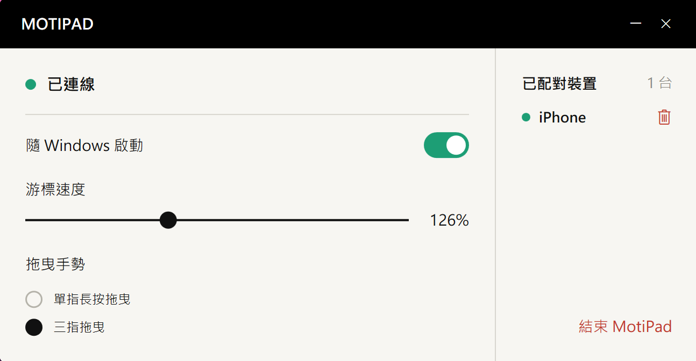

少佔空間
滑鼠沒地方走，
手指還能動。
不用為滑鼠留一塊來回移動的桌面。手指在手機螢幕上滑動，就能控制電腦游標。
少佔一點空間，少帶一件配件。
熟悉的手勢，就在你的手機上。


咖啡廳的小桌、臨時工作的角落，或是不想再多帶一件配件的日子。用手邊的 iPhone，把觸控板一起帶上。
不用為滑鼠留一塊來回移動的桌面。手指在手機螢幕上滑動，就能控制電腦游標。
出門不想多帶滑鼠或觸控板？讓平常帶著的 iPhone，多做一件事。
移動游標、輕點、雙指捲動。
簡單的操作區，讓手指專注在操作本身。
檔案要拖到大螢幕的另一端，手指卻已滑到手機邊緣？短暫抬起，再放回來，就能接著拖曳。
把常用的電腦配對好，從手機上的選單選擇要控制的那一台。換個工作位置，也能接著用。
把常用電腦加入配對清單。
在選單中切換控制對象。
每次控制一台電腦。
開啟 MotiPad，以手機螢幕操作游標、捲動與拖曳。
安裝接收端，在同一個區域網路完成配對。游標速度與拖曳手勢，都能在電腦端調整。
下載並安裝 Windows 接收端，搭配 iPhone 上的 MotiPad 使用。iPhone 版 App Store 連結將於上架後提供。